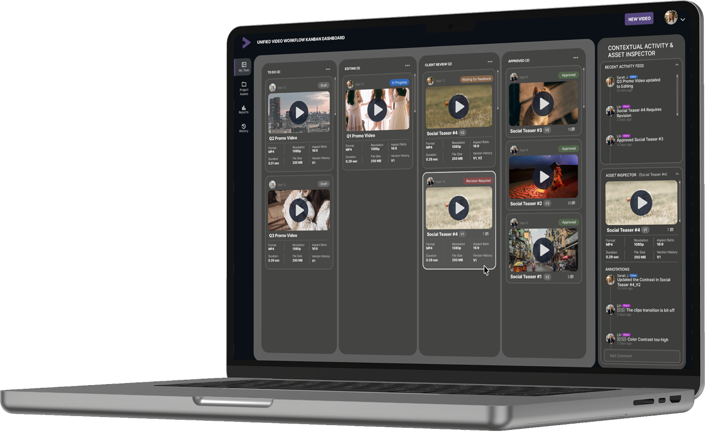
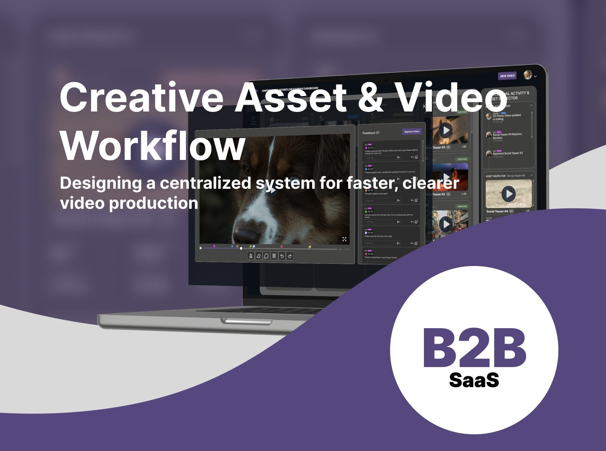
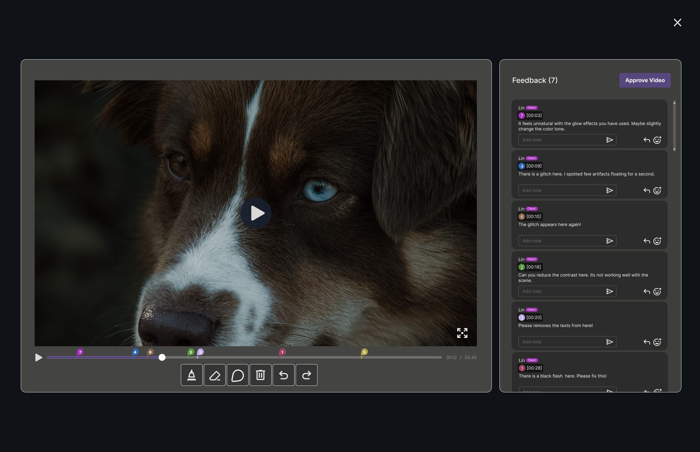
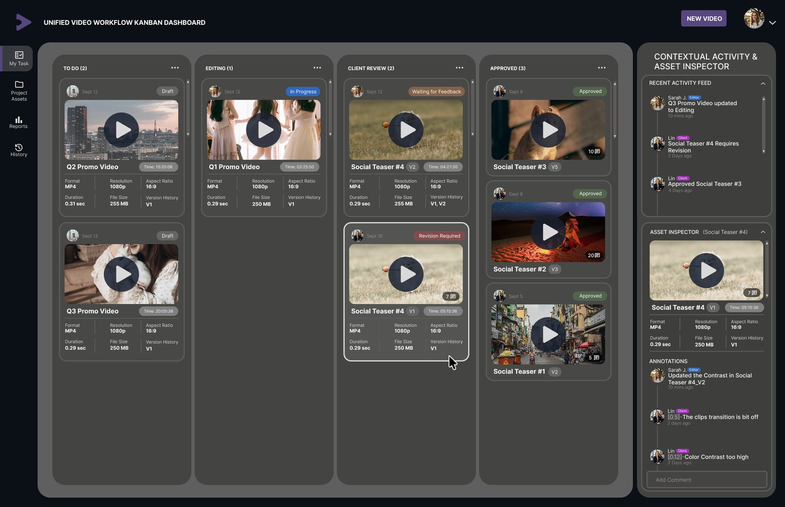

A workflow system that gets video production out of Slack threads
CAVW (Creative Asset & Video Workflow) is a B2B SaaS concept that puts strategists, editors, and clients in one pipeline: a Kanban production board, smart task cards, and a review room where clients leave timestamped feedback straight from a link.

This is a concept project, built around a problem I kept running into as a motion designer: video production workflows live in too many places at once. Slack for feedback, email for approvals, a spreadsheet for tasks, a shared drive for files. The question I started with was whether one tool could replace all of it without being worse than each of those things individually.
One place where a video goes from brief to approved
Video production workflows are broken. The tools aren't bad; the work just lives in five of them at once.
Teams rely on Slack, email, and cloud storage to deliver a single video, which produces scattered communication, unclear ownership, and slow approval cycles. I've worked in motion graphics and video production, so I've been the editor hunting through a thread for "the feedback from Tuesday." CAVW pulls that whole workflow into one place and connects the three people every video passes through: the strategist who plans it, the editor who makes it, and the client who approves it.
My role: everything. UX research, product strategy, wireframing, UI design, interaction design. Nothing came from a brief or an existing design system.

Three failures every video team recognizes
Before drawing anything, I framed the project around the three ways the current workflow breaks down:
Fragmented communication across tools
The brief is in a doc, the cut is in Drive, the feedback is split between Slack and email. Nobody is wrong, but nothing is in one place, and every handoff loses a little context.
Unclear ownership of tasks
When status lives in people's heads, "who has this right now?" becomes a daily question. Strategists chase updates instead of planning; editors get interrupted to answer them.
Delayed approvals from bad feedback loops
"Fix the thing around the middle" forces the editor to guess, miss, and resubmit. Vague feedback is the single biggest source of extra revision cycles.
"I lose track of feedback across emails and Slack, and approvals take days longer than they should."
Interviews, my own scar tissue, and a competitor teardown
I ran guerrilla interviews with four video editors and two content creators, analyzed my own production workflow from my motion-graphics work, and tore down the tools teams already use. Three insights shaped everything downstream:
- Editors spend a lot of their time interpreting unclear feedback rather than acting on it.
- Strategists have no single source of truth for where projects actually stand.
- Clients pick simplicity over features every time. Each extra step costs you their feedback.
What the existing tools get right, and what they miss
Frame.io
Powerful for editors, but too complex for the clients who only need to leave feedback.
Vimeo Review
Clean interface, but workflow management is limited. Review is a feature there, not a pipeline.
Wipster
Simple feedback, but lacks support for the full production pipeline around it.
The opportunity: none of these tools combines workflow management, video review, and client collaboration in one product. Each competitor owns one corner. CAVW connects all three.
Information Architecture: three distinct permission tiers, three fundamentally different interfaces, one shared content system underneath.
Three roles, three very different definitions of "simple"
The Content Strategist
"I need to know where every project stands without asking for updates."Needs pipeline visibility at a glance: what's in production, what's blocked, what's shipping this week.
The Video Editor
"Give me clear feedback and don't make me hunt for files."Needs technical clarity: exact timestamps, version history, and assets that stay attached to the task.
The Client
"I just want to click a link and tell you what to fix."Needs zero complexity: a link and a comment box, with no account and nothing to learn.
The hardest design constraint fell out of this immediately: the same system has to feel powerful to the editor and nearly invisible to the client.
Four weeks, research to high-fidelity
Why the board works the way it does
1 · Why Kanban?
A board gives the whole team a shared mental model of progress that list-based systems never quite deliver. The four columns (To Do, Editing, Client Review, Approved) mirror how video teams already talk about work, so status stops being a question anyone has to ask. Dragging a card updates its state in real time, and that visibility is what lets people stop pinging each other for updates.
2 · Why no-login review?
Requiring an account is the fastest way to lose a client's feedback, so the review room works from a secure link with no login. The client clicks, watches, comments, and approves without ever seeing the production machinery behind it.
3 · Why timestamped feedback?
Anchoring comments to exact timecodes removes the ambiguity that causes revision cycles. "Color contrast is too high at 0:12" is actionable in a way "fix the colors" never is. Numbered markers on the scrubber map each comment to its moment, and the feedback panel keeps the full conversation threaded next to the player.

4 · Cards that carry their own context
Each smart task card carries its video thumbnail, assigned editor, deadline, version history, and comment indicators: enough that a strategist scanning the board never has to open a task to know its state. The activity feed and asset inspector live in a right rail, so checking an asset never takes you away from the pipeline.

5 · Constraints I set on purpose
- Balance simplicity for clients with power for editors; neither audience should pay for the other's interface.
- Avoid overwhelming users: hide production metadata until it's asked for.
- Ensure the system scales to multiple projects and teams without redesign.
The board in motion
Static frames can't show the two interactions the whole concept rests on, so I prototyped them: a task card dragged across the pipeline updates its state in real time, and the review room opens as a layer over the board, so reviewing a cut never pulls you out of the work.
What this is designed to change
A scalable, user-centered workflow system designed to simplify video production and improve collaboration across teams.
Faster approvals
If the research is right, structured timestamped review should cut approval time by 30-40% compared to email and Slack feedback. That is a design hypothesis the prototype is built to test, not a measured result.
Fewer revision cycles
Precise feedback means the editor fixes the right thing the first time, with fewer guesses and fewer resubmissions.
Visible status, calmer teams
The board answers "where is it?" so people can stop asking it. Ownership is explicit at every stage.
These are design hypotheses, not measured results. CAVW is a concept project built to prove out a production approach. The numbers are targets derived from the research. I name them because defining what success looks like before testing is part of the job.
The review I'd give someone else's file
Before writing this case study I audited my own Figma file the way I'd audit a stranger's. It found real problems, and fixing them taught me more than building the screens did:
Mock data is part of the craft
Early card metadata repeated the same duration and file size everywhere, including a 0.29-second promo video. Implausible placeholder content breaks immersion exactly where the design is trying to build trust.
Marker numbers must match the timeline
The review room's comment markers were numbered in creation order, not chronological order, so marker 7 sat left of marker 1. The panel and scrubber now need to share one ordering rule: by timestamp.
Duplicated copy slips in quietly
Two research cards, Opportunity and Differentiation, ended up with identical body text. Nobody duplicates copy on purpose; it happens when sections are cloned and never re-read.
File hygiene is a deliverable
Frames named "Frame 27," no shared styles or variables despite a clear purple system, repeated cards that should be components. A portfolio file gets opened by recruiters. Its structure is part of the portfolio.
Auditing my own file was uncomfortable in a useful way. Every problem I found was one I would have spotted in someone else's work within minutes, which tells me exactly where my blind spot lives: in whatever I shipped most recently.
What I'd do differently
Test with real users
The no-login review room and the one-board pipeline make sense on paper, but nobody has tried to break them yet. Usability sessions with a real strategist, editor, and client would show whether the three-role model survives contact with an actual deadline.
Refine micro-interactions
The prototype covers the headline moves. Marker hover states, drop animations, and the approve confirmation still need real motion design, and that detail work decides whether the interface feels finished.
Design the edge cases
What happens when a client approves while revision-required comments are still open? Right now, nothing stops them. Gating approval on resolved feedback, or adding a "request changes" path, is the next design problem.
Scale to enterprise
Multiple projects, multiple teams, permissions, and archives. The system map supports it on paper; the UI hasn't earned it yet.